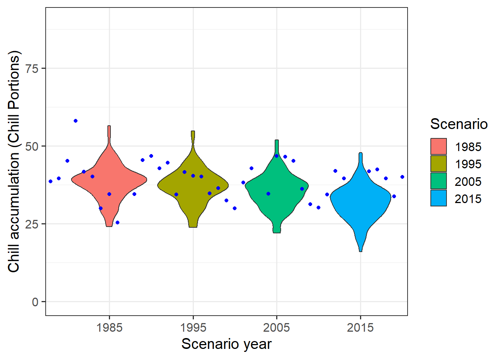

Chapter 13 Historic temperature scenarios
13.1 For the location you chose for previous exercises, produce historic temperature scenarios representing several years of the historic record (your choice).
After creating a baseline scenario for 2001, we can use the temperature_scenario_from_records function to create absolute scenarios for the years c(1985, 1995, 2005, 2015). The absolute scenarios are adjusted to the baseline to be used in the temperature_generation() function.
require(chillR)
scenario_2001<-temperature_scenario_from_records(weather=weather_CapeTown,
year=2001)
scenario_2001
all_past_scenarios <- temperature_scenario_from_records(
weather=weather_CapeTown,
year=c(1985, 1995, 2005, 2015)) #creating absolute scenarios for those years
adjusted_scenarios <- temperature_scenario_baseline_adjustment(
baseline=scenario_2001,
temperature_scenario = all_past_scenarios) #transform to relative with bl 96
all_past_scenario_temps <- temperature_generation(
weather=weather_CapeTown,
years=c(1982,2020),
sim_years=c(2001,2100),
temperature_scenario = adjusted_scenarios)scenario_2001<-temperature_scenario_from_records(weather=weather_CapeTown,
year=2001)
scenario_2001## $`2001`
## $`2001`$data
## Tmin Tmax
## 1 16.152210 27.87210
## 2 16.226086 28.42761
## 3 14.440562 26.94397
## 4 11.958025 24.71802
## 5 9.854958 21.64432
## 6 7.680864 19.13988
## 7 6.839785 18.38471
## 8 7.663321 18.86260
## 9 9.015185 20.48383
## 10 10.818519 23.17312
## 11 13.148272 24.55012
## 12 15.325568 26.77467
##
## $`2001`$scenario_year
## [1] 2001
##
## $`2001`$reference_year
## [1] NA
##
## $`2001`$scenario_type
## [1] "absolute"
##
## $`2001`$labels
## [1] "running mean scenario"all_past_scenarios <- temperature_scenario_from_records(
weather=weather_CapeTown,
year=c(1985, 1995, 2005, 2015)) #creating absolute scenarios for those years
adjusted_scenarios <- temperature_scenario_baseline_adjustment(
baseline=scenario_2001,
temperature_scenario = all_past_scenarios) #transform to relative with bl 96| Tmin | Tmax |
|---|---|
| 16.152210 | 27.87210 |
| 16.226086 | 28.42761 |
| 14.440561 | 26.94397 |
| 11.958025 | 24.71802 |
| 9.854958 | 21.64432 |
| 7.680864 | 19.13988 |
| 6.839785 | 18.38471 |
| 7.663321 | 18.86260 |
| 9.015185 | 20.48383 |
| 10.818518 | 23.17312 |
| 13.148272 | 24.55012 |
| 15.325568 | 26.77467 |
| Tmin | Tmax |
|---|---|
| 15.993429 | 26.63172 |
| 15.776060 | 26.95791 |
| 14.495938 | 25.83405 |
| 12.238395 | 23.62877 |
| 9.708542 | 21.17754 |
| 7.467284 | 18.93593 |
| 7.288829 | 18.21661 |
| 7.906810 | 18.82796 |
| 9.057963 | 19.90099 |
| 10.928076 | 21.95842 |
| 13.282407 | 24.03389 |
| 15.062067 | 25.37497 |
| Tmin | Tmax |
|---|---|
| -0.1587814 | -1.2403823 |
| -0.4500251 | -1.4696999 |
| 0.0553763 | -1.1099164 |
| 0.2803704 | -1.0892593 |
| -0.1464158 | -0.4667861 |
| -0.2135802 | -0.2039506 |
| 0.4490442 | -0.1681004 |
| 0.2434886 | -0.0346476 |
| 0.0427778 | -0.5828395 |
| 0.1095579 | -1.2146953 |
| 0.1341358 | -0.5162346 |
| -0.2635006 | -1.3997013 |
13.2 Produce chill distributions for these scenarios and plot them.
chill_hist_scenario_list <- tempResponse_daily_list(all_past_scenario_temps,
latitude=coords[2],
Start_JDay = 121,
End_JDay = 243)
scenarios<-names(chill_hist_scenario_list)[1:4]
all_scenarios<-chill_hist_scenario_list[[scenarios[1]]]
all_scenarios[,"scenario"] <- as.numeric(scenarios[1])
for (sc in scenarios[2:4])
all_scenarios<-rbind(all_scenarios,
cbind(chill_hist_scenario_list[[sc]],scenario=as.numeric(sc)))
all_scenarios <- all_scenarios[which(all_scenarios$Perc_complete==100),]
actual_chill <- tempResponse_daily_list(weather_CapeTown,latitude=coords[2],
Start_JDay = 121,
End_JDay = 243)[[1]]
actual_chill <- actual_chill[which(actual_chill$Perc_complete==100),]require(ggplot2)## Lade nötiges Paket: ggplot2ggplot(data=all_scenarios,aes(scenario,Chill_Portions,
fill=factor(scenario))) +
geom_violin() +
ylab("Chill accumulation (Chill Portions)") +
xlab("Scenario year") +
theme_bw(base_size=15) +
ylim(c(0,90)) +
geom_point(data=actual_chill,
aes(End_year,Chill_Portions,fill="blue"),
col="blue",show.legend = FALSE) +
scale_fill_discrete(name="Scenario",
breaks = unique(all_scenarios$scenario))

Figure 13.1: Violin charts that display the chill accumulation for the simulated years of 1985,1995,2005,2015. The blue points represent the actual chill measured during this time